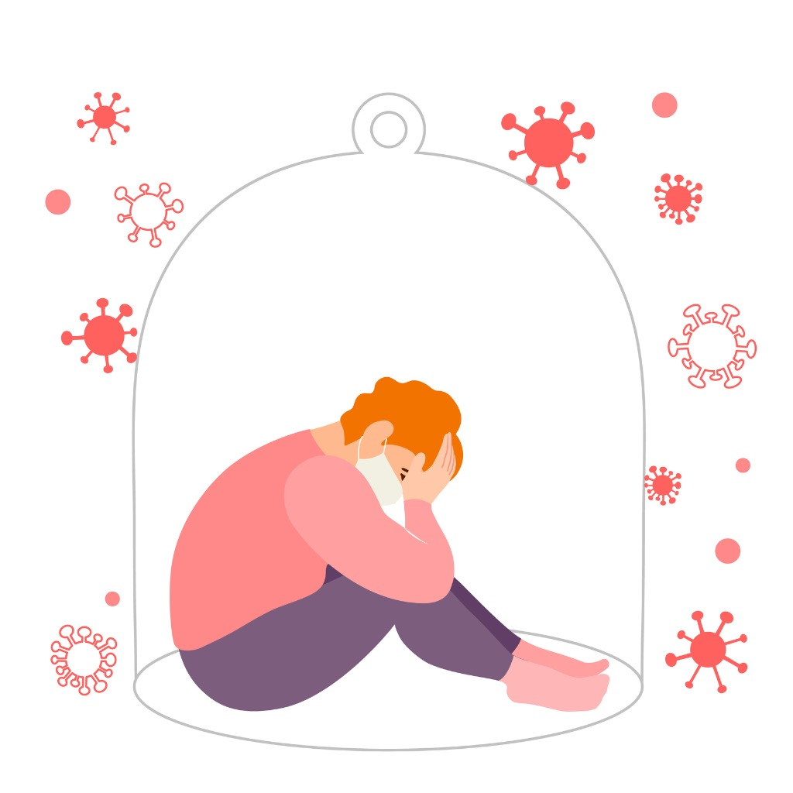
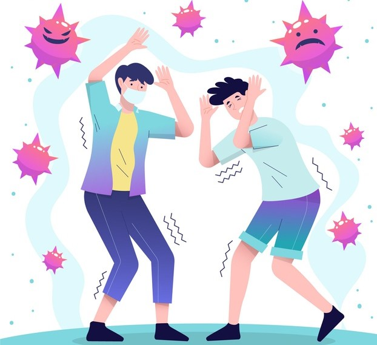
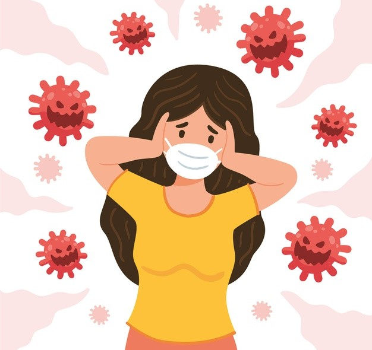
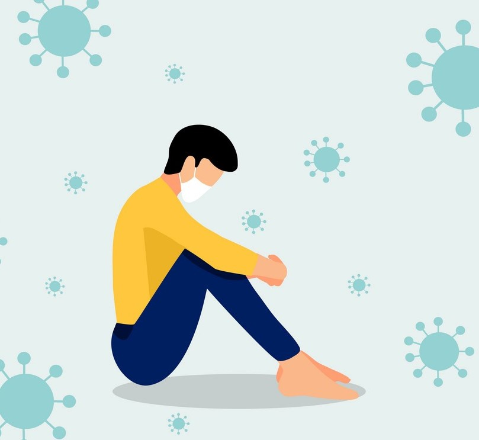

What are the effects of the COVID-19 pandemic on mental health?

The COVID-19 pandemic has disrupted or halted critical mental health services in 93% of countries worldwide while the demand for mental health is increasing, according to a new WHO survey. The survey of 130 countries provides the first global data showing the devastating impact of COVID-19 on access to mental health services and underscores the urgent need for increased funding.

As the coronavirus pandemic rapidly sweeps across the world, it is inducing a considerable degree of fear, worry and concern in the population at large and among certain groups in particular, such as older adults, care providers and people with underlying health conditions.

In public mental health terms, the main psychological impact to date is elevated rates of stress or anxiety. But as new measures and impacts are introduced – especially quarantine and its effects on many people’s usual activities, routines or livelihoods – levels of loneliness, depression, harmful alcohol and drug use, and self-harm or suicidal behaviour are also expected to rise.

And the pandemic is increasing demand for mental health services. Bereavement, isolation, loss of income and fear are triggering mental health conditions or exacerbating existing ones. Many people may be facing increased levels of alcohol and drug use, insomnia, and anxiety. Meanwhile, COVID-19 itself can lead to neurological and mental complications, such as delirium, agitation, and stroke. People with pre-existing mental, neurological or substance use disorders are also more vulnerable to SARS-CoV-2 infection ̶ they may stand a higher risk of severe outcomes and even death.